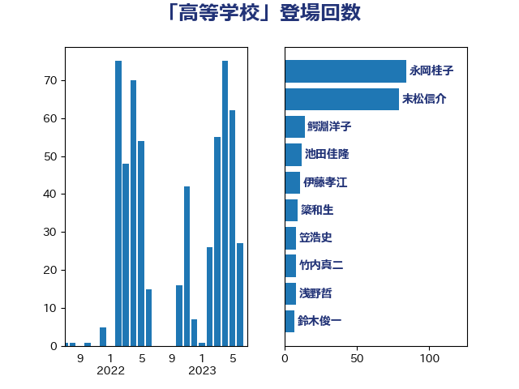

単語「高等学校」

| 永岡桂子 | 自由民主党 | 84 回 |
| 末松信介 | 自由民主党 | 79 回 |
| 鰐淵洋子 | 公明党 | 14 回 |
| 池田佳隆 | 自由民主党 | 12 回 |
| 伊藤孝江 | 公明党 | 11 回 |
| 簗和生 | 自由民主党 | 9 回 |
| 笠浩史 | 無所属 | 8 回 |
| 竹内真二 | 公明党 | 8 回 |
| 浅野哲 | 国民民主党 | 8 回 |
| 鈴木俊一 | 自由民主党 | 7 回 |
| 平林晃 | 公明党 | 7 回 |
| 若宮健嗣 | 自由民主党 | 5 回 |
| 舩後靖彦 | れいわ新選組 | 5 回 |
| 福重隆浩 | 公明党 | 5 回 |
| 伊藤孝恵 | 国民民主党 | 5 回 |
| 井出庸生 | 自由民主党 | 5 回 |
| 漆間譲司 | 日本維新の会 | 4 回 |
| 杉久武 | 公明党 | 4 回 |
| 山崎正恭 | 公明党 | 4 回 |
| 宮口治子 | 立憲民主党 | 4 回 |
| 加藤勝信 | 自由民主党 | 4 回 |
| 岸田文雄 | 自由民主党 | 3 回 |
| 小倉將信 | 自由民主党 | 3 回 |
| 佐藤英道 | 公明党 | 3 回 |
| 高良鉄美 | 無所属 | 2 回 |
| 金村龍那 | 日本維新の会 | 2 回 |
| 野田聖子 | 自由民主党 | 2 回 |
| 西銘恒三郎 | 自由民主党 | 2 回 |
| 西村康稔 | 自由民主党 | 2 回 |
| 蓮舫 | 立憲民主党 | 2 回 |
| 白石洋一 | 立憲民主党 | 2 回 |
| 熊谷裕人 | 立憲民主党 | 2 回 |
| 深澤陽一 | 自由民主党 | 2 回 |
| 浜田聡 | NHK党 | 2 回 |
| 池畑浩太朗 | 日本維新の会 | 2 回 |
| 柳ヶ瀬裕文 | 日本維新の会 | 2 回 |
| 林芳正 | 自由民主党 | 2 回 |
| 岡本あき子 | 立憲民主党 | 2 回 |
| 堤かなめ | 立憲民主党 | 2 回 |
| 中谷一馬 | 立憲民主党 | 2 回 |
| 中川正春 | 立憲民主党 | 2 回 |
| 高橋はるみ | 自由民主党 | 1 回 |
| 高市早苗 | 自由民主党 | 1 回 |
| 鈴木義弘 | 国民民主党 | 1 回 |
| 道下大樹 | 立憲民主党 | 1 回 |
| 赤池誠章 | 自由民主党 | 1 回 |
| 西岡秀子 | 国民民主党 | 1 回 |
| 萩生田光一 | 自由民主党 | 1 回 |
| 菊田真紀子 | 立憲民主党 | 1 回 |
| 臼井正一 | 自由民主党 | 1 回 |
| 羽田次郎 | 立憲民主党 | 1 回 |
| 篠原豪 | 立憲民主党 | 1 回 |
| 稲津久 | 公明党 | 1 回 |
| 石原正敬 | 自由民主党 | 1 回 |
| 石井苗子 | 日本維新の会 | 1 回 |
| 牧義夫 | 立憲民主党 | 1 回 |
| 源馬謙太郎 | 立憲民主党 | 1 回 |
| 渡辺創 | 立憲民主党 | 1 回 |
| 河西宏一 | 公明党 | 1 回 |
| 森山浩行 | 立憲民主党 | 1 回 |
| 木原稔 | 自由民主党 | 1 回 |
| 早稲田ゆき | 立憲民主党 | 1 回 |
| 早坂敦 | 日本維新の会 | 1 回 |
| 掘井健智 | 日本維新の会 | 1 回 |
| 打越さく良 | 立憲民主党 | 1 回 |
| 後藤茂之 | 自由民主党 | 1 回 |
| 岡田直樹 | 自由民主党 | 1 回 |
| 山下貴司 | 自由民主党 | 1 回 |
| 尾身朝子 | 自由民主党 | 1 回 |
| 小宮山泰子 | 立憲民主党 | 1 回 |
| 宮内秀樹 | 自由民主党 | 1 回 |
| 安江伸夫 | 公明党 | 1 回 |
| 大島九州男 | れいわ新選組 | 1 回 |
| 城井崇 | 立憲民主党 | 1 回 |
| 坂本祐之輔 | 立憲民主党 | 1 回 |
| 和田有一朗 | 日本維新の会 | 1 回 |
| 古川元久 | 国民民主党 | 1 回 |
| 住吉寛紀 | 日本維新の会 | 1 回 |
| 今井絵理子 | 自由民主党 | 1 回 |
| 中条きよし | 日本維新の会 | 1 回 |
| 中川宏昌 | 公明党 | 1 回 |
| 下野六太 | 公明党 | 1 回 |